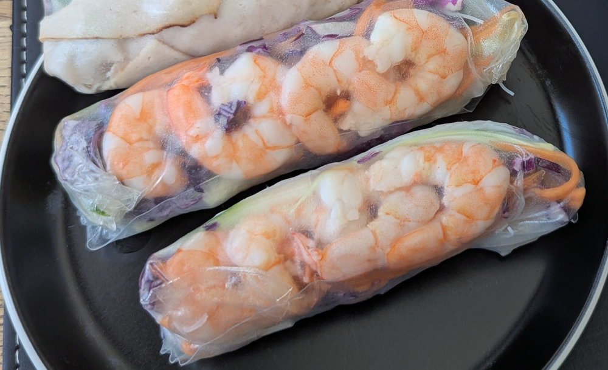

Vietnamese Rice Paper Rolls★
 Makes 7 rolls
Makes 7 rolls 20 minutes
20 minutes Source
Source Meat
Meat
Fresh rice paper rolls with prawns, vermicelli noodles and a Vietnamese peanut dipping sauce.

Peanut dipping sauce
1 tbspsmooth peanut butter2 tbsphoisin sauce1½ tbspwhite vinegar or lime juice80mlmilk (or water)1garlic clove, minced½ tspcrushed chilli or sambal oelek (optional)
Combine all sauce ingredients. Mix briefly, then microwave for 30 seconds. Stir until smooth. Set aside to cool. Adjust sourness with vinegar, saltiness with salt, and thickness with milk or water.
Rolls
7–14 sheetsrice paper, 22cm round (use 2 per roll for easier rolling)50gdried vermicelli noodles1 cupbean sprouts7soft lettuce leaves (butter or oak lettuce)11small cooked prawns, peeled, halved lengthwise and deveined14mint leaves
Soak vermicelli noodles in warm water for 2 minutes, then drain.
Place some noodles and bean sprouts in a lettuce leaf and roll it up, seam side down. This is your lettuce bundle. Repeat for all rolls.
Fill a large bowl with warm water. Stack 2 rice paper sheets together (smooth side out) and submerge for 2 seconds, rotating if needed. Lay flat on a board, smooth side down.
Near the top of the rice paper, place 3 prawn halves with a mint leaf between each. Place the lettuce bundle seam side down in the centre.
Fold in the left and right edges, then roll up from the bottom, rolling firmly. The rice paper is self-sealing.
Serve immediately with peanut dipping sauce.
Storage: Wrap each roll individually in cling film as soon as made and refrigerate. Best within 6 hours.
Other filling ideas: julienned carrot or cucumber, thinly sliced tofu, shredded chicken, coriander or chives.
DIY option: Lay all components out on the table with a bowl of water and let everyone roll their own.